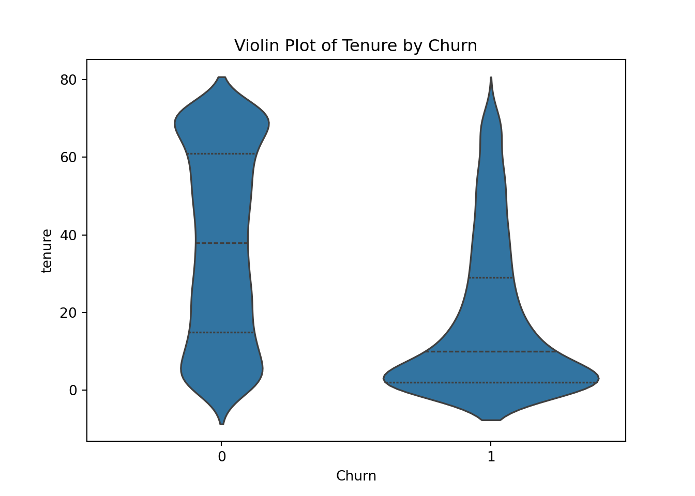
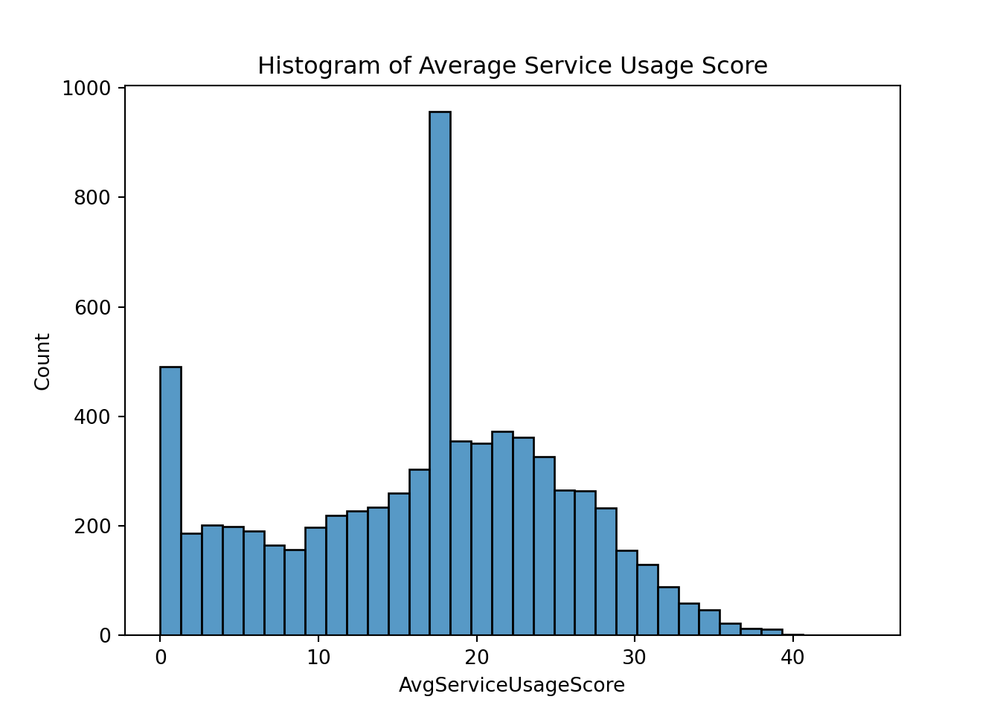
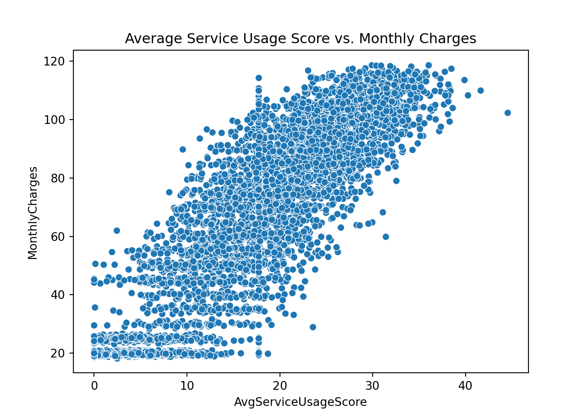
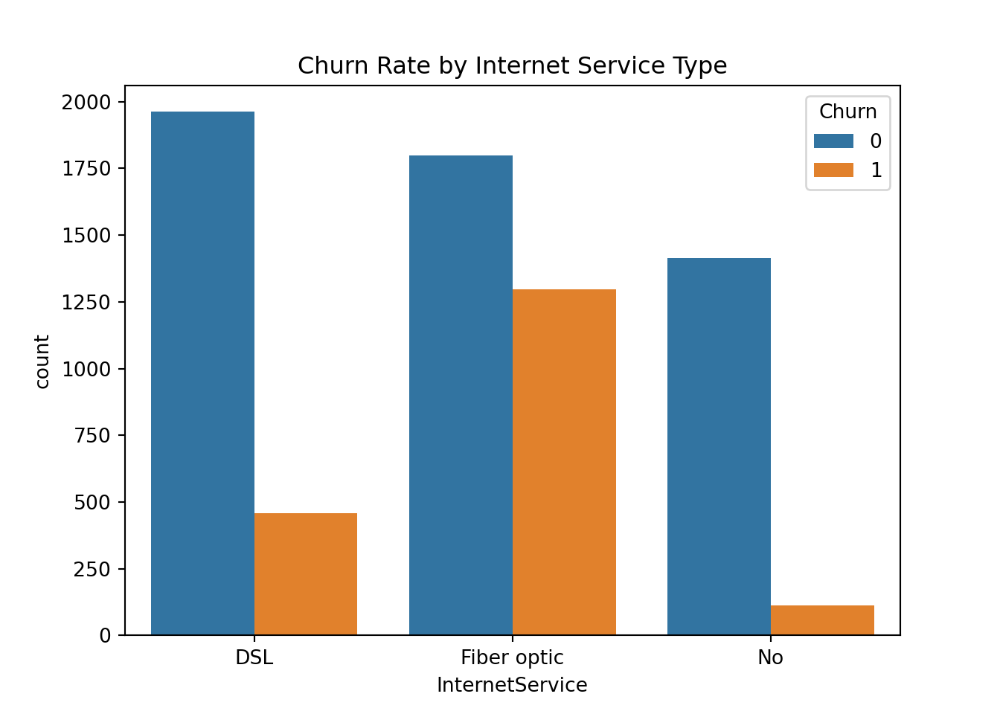
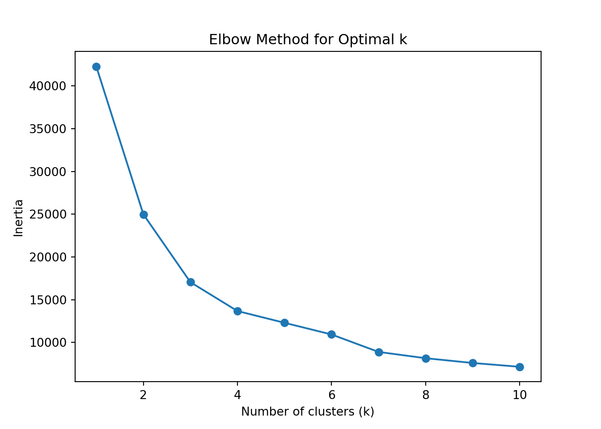
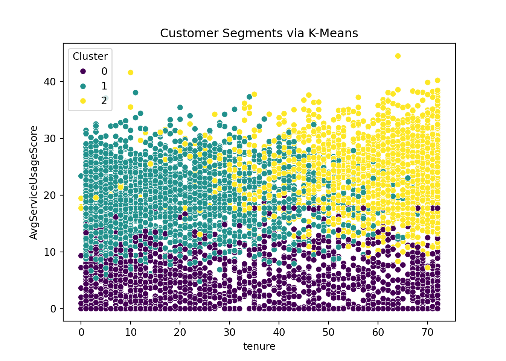

import pandas as pd
import numpy as np
# Load dataset
df = pd.read_csv('telco-customer-churn.csv')
# Add in 6% of missing values to MonthlyCharges column
np.random.seed(42)
missing_indices = np.random.choice(df.index, size=int(len(df) * 0.06), replace=False)
df.loc[missing_indices, 'MonthlyCharges'] = np.nanWalkthroughs and Exercises for Machine Learning for Data Analytics with Python
Intro: Getting Started with Machine Learning for Data-Driven Decisions
Walkthrough #1: Setting Up the Python Environment for ML
If you haven’t already installed Python, Jupyter, and the necessary packages, there are instructions on the course repo in the README to do so here.
If you aren’t able to do this on your machine, you may want to check out Google Colab. It’s a free service that allows you to run Jupyter notebooks in the cloud.
Exercise #1: Setting Up the Python Environment
By completing this exercise, you will be able to
- Import necessary Python packages
- Check for successful package loading
Follow the instructions above in Walkthrough #1 to check for correct installation of necessary packages. We’ll wait a few minutes to make sure as many of you are set up as possible. Please give a thumbs up in the pulse check if you are ready to move on.
Module 1: Data Understanding and Preprocessing for Machine Learning
Walkthrough #2: Exploring and Preprocessing Data with Pandas & Seaborn
Load and Inspect a Dataset Using Pandas
# Encode service columns as binary
service_cols = [
'PhoneService', 'OnlineSecurity', 'OnlineBackup',
'DeviceProtection', 'TechSupport', 'StreamingTV', 'StreamingMovies'
]
for col in service_cols:
df[col] = df[col].map({'Yes': 1, 'No': 0, 'No internet service': 0, 'No phone service': 0}).astype(int)
df['ServiceCount'] = df[service_cols].sum(axis=1)
# Add Internet score
df['InternetScore'] = df['InternetService'].map({'Fiber optic': 40, 'DSL': 20, 'No': 0})
# Stronger functional link: tie engagement score directly to MonthlyCharges logic
# Higher charges → almost always due to more services, tenure, and Internet type
np.random.seed(42)
df['AvgServiceUsageScore'] = (
df['MonthlyCharges'] * 0.05 # **direct linear dependence**
+ df['ServiceCount'] * 2 # services still matter slightly
+ df['InternetScore'] * 0.3 # Internet type adds a small weight
+ np.random.normal(0, 4, len(df)) # tiny noise
).clip(0, 100)
# Add in 6% of missing values to MonthlyCharges column (plus 3% to AvgServiceUsageScore)
missing_indices = np.random.choice(df.index, size=int(len(df) * 0.03), replace=False)
df.loc[missing_indices, 'AvgServiceUsageScore'] = np.nan# Move 'Churn' column to the end
churn_col = df.pop('Churn') # removes 'Churn' and stores it temporarily
df['Churn'] = churn_col # re-inserts it at the end
# Inspect data structure
df customerID gender SeniorCitizen Partner Dependents tenure PhoneService \
0 7590-VHVEG Female 0 Yes No 1 0
1 5575-GNVDE Male 0 No No 34 1
2 3668-QPYBK Male 0 No No 2 1
3 7795-CFOCW Male 0 No No 45 0
4 9237-HQITU Female 0 No No 2 1
... ... ... ... ... ... ... ...
7038 6840-RESVB Male 0 Yes Yes 24 1
7039 2234-XADUH Female 0 Yes Yes 72 1
7040 4801-JZAZL Female 0 Yes Yes 11 0
7041 8361-LTMKD Male 1 Yes No 4 1
7042 3186-AJIEK Male 0 No No 66 1
MultipleLines InternetService OnlineSecurity OnlineBackup DeviceProtection \
0 No phone service DSL 0 1 0
1 No DSL 1 0 1
2 No DSL 1 1 0
3 No phone service DSL 1 0 1
4 No Fiber optic 0 0 0
... ... ... ... ... ...
7038 Yes DSL 1 0 1
7039 Yes Fiber optic 0 1 1
7040 No phone service DSL 1 0 0
7041 Yes Fiber optic 0 0 0
7042 No Fiber optic 1 0 1
TechSupport StreamingTV StreamingMovies Contract PaperlessBilling \
0 0 0 0 Month-to-month Yes
1 0 0 0 One year No
2 0 0 0 Month-to-month Yes
3 1 0 0 One year No
4 0 0 0 Month-to-month Yes
... ... ... ... ... ...
7038 1 1 1 One year Yes
7039 0 1 1 One year Yes
7040 0 0 0 Month-to-month Yes
7041 0 0 0 Month-to-month Yes
7042 1 1 1 Two year Yes
PaymentMethod MonthlyCharges TotalCharges ServiceCount InternetScore \
0 Electronic check 29.85 29.85 1 20
1 Mailed check 56.95 1889.5 3 20
2 Mailed check 53.85 108.15 3 20
3 Bank transfer (automatic) 42.30 1840.75 3 20
4 Electronic check 70.70 151.65 1 40
... ... ... ... ... ...
7038 Mailed check 84.80 1990.5 6 20
7039 Credit card (automatic) 103.20 7362.9 5 40
7040 Electronic check 29.60 346.45 1 20
7041 Mailed check 74.40 306.6 1 40
7042 Bank transfer (automatic) 105.65 6844.5 6 40
AvgServiceUsageScore Churn
0 11.479357 No
1 14.294443 No
2 17.283254 Yes
3 20.207119 No
4 16.598387 Yes
... ... ...
7038 13.096891 No
7039 24.029635 No
7040 12.545554 No
7041 16.064420 Yes
7042 31.125689 No
[7043 rows x 24 columns]df.info()<class 'pandas.core.frame.DataFrame'>
RangeIndex: 7043 entries, 0 to 7042
Data columns (total 24 columns):
# Column Non-Null Count Dtype
--- ------ -------------- -----
0 customerID 7043 non-null object
1 gender 7043 non-null object
2 SeniorCitizen 7043 non-null int64
3 Partner 7043 non-null object
4 Dependents 7043 non-null object
5 tenure 7043 non-null int64
6 PhoneService 7043 non-null int64
7 MultipleLines 7043 non-null object
8 InternetService 7043 non-null object
9 OnlineSecurity 7043 non-null int64
10 OnlineBackup 7043 non-null int64
11 DeviceProtection 7043 non-null int64
12 TechSupport 7043 non-null int64
13 StreamingTV 7043 non-null int64
14 StreamingMovies 7043 non-null int64
15 Contract 7043 non-null object
16 PaperlessBilling 7043 non-null object
17 PaymentMethod 7043 non-null object
18 MonthlyCharges 6621 non-null float64
19 TotalCharges 7043 non-null object
20 ServiceCount 7043 non-null int64
21 InternetScore 7043 non-null int64
22 AvgServiceUsageScore 6420 non-null float64
23 Churn 7043 non-null object
dtypes: float64(2), int64(11), object(11)
memory usage: 1.3+ MB# Check for missing values
df.isnull().sum()customerID 0
gender 0
SeniorCitizen 0
Partner 0
Dependents 0
tenure 0
PhoneService 0
MultipleLines 0
InternetService 0
OnlineSecurity 0
OnlineBackup 0
DeviceProtection 0
TechSupport 0
StreamingTV 0
StreamingMovies 0
Contract 0
PaperlessBilling 0
PaymentMethod 0
MonthlyCharges 422
TotalCharges 0
ServiceCount 0
InternetScore 0
AvgServiceUsageScore 623
Churn 0
dtype: int64# Check for duplicate rows
print(f"Duplicate rows: {df.duplicated().sum()}")Duplicate rows: 0Handle Missing Values and Clean Data
# Handle MonthlyCharges missing values
#df['MonthlyCharges'] = pd.to_numeric(df['MonthlyCharges'], errors='coerce')
df['MonthlyCharges'] = df['MonthlyCharges'].fillna(df['MonthlyCharges'].median())
df['AvgServiceUsageScore'] = df['AvgServiceUsageScore'].fillna(df['AvgServiceUsageScore'].median())
df.info()<class 'pandas.core.frame.DataFrame'>
RangeIndex: 7043 entries, 0 to 7042
Data columns (total 24 columns):
# Column Non-Null Count Dtype
--- ------ -------------- -----
0 customerID 7043 non-null object
1 gender 7043 non-null object
2 SeniorCitizen 7043 non-null int64
3 Partner 7043 non-null object
4 Dependents 7043 non-null object
5 tenure 7043 non-null int64
6 PhoneService 7043 non-null int64
7 MultipleLines 7043 non-null object
8 InternetService 7043 non-null object
9 OnlineSecurity 7043 non-null int64
10 OnlineBackup 7043 non-null int64
11 DeviceProtection 7043 non-null int64
12 TechSupport 7043 non-null int64
13 StreamingTV 7043 non-null int64
14 StreamingMovies 7043 non-null int64
15 Contract 7043 non-null object
16 PaperlessBilling 7043 non-null object
17 PaymentMethod 7043 non-null object
18 MonthlyCharges 7043 non-null float64
19 TotalCharges 7043 non-null object
20 ServiceCount 7043 non-null int64
21 InternetScore 7043 non-null int64
22 AvgServiceUsageScore 7043 non-null float64
23 Churn 7043 non-null object
dtypes: float64(2), int64(11), object(11)
memory usage: 1.3+ MB
# Standardize column formats (e.g., convert Yes/No to binary for a few columns)
df['SeniorCitizen'] = df['SeniorCitizen'].astype('category')
df['Churn'] = df['Churn'].map({'Yes': 1, 'No': 0})Create Visualizations to Identify Key Business Trends
import seaborn as sns
import matplotlib.pyplot as plt
# Summarize statistics
df.describe(include='all') customerID gender SeniorCitizen Partner Dependents tenure PhoneService \
count 7043 7043 7043.0 7043 7043 7043.000000 7043.000000
unique 7043 2 2.0 2 2 NaN NaN
top 7590-VHVEG Male 0.0 No No NaN NaN
freq 1 3555 5901.0 3641 4933 NaN NaN
mean NaN NaN NaN NaN NaN 32.371149 0.903166
std NaN NaN NaN NaN NaN 24.559481 0.295752
min NaN NaN NaN NaN NaN 0.000000 0.000000
25% NaN NaN NaN NaN NaN 9.000000 1.000000
50% NaN NaN NaN NaN NaN 29.000000 1.000000
75% NaN NaN NaN NaN NaN 55.000000 1.000000
max NaN NaN NaN NaN NaN 72.000000 1.000000
MultipleLines InternetService OnlineSecurity OnlineBackup DeviceProtection TechSupport \
count 7043 7043 7043.000000 7043.000000 7043.000000 7043.000000
unique 3 3 NaN NaN NaN NaN
top No Fiber optic NaN NaN NaN NaN
freq 3390 3096 NaN NaN NaN NaN
mean NaN NaN 0.286668 0.344881 0.343888 0.290217
std NaN NaN 0.452237 0.475363 0.475038 0.453895
min NaN NaN 0.000000 0.000000 0.000000 0.000000
25% NaN NaN 0.000000 0.000000 0.000000 0.000000
50% NaN NaN 0.000000 0.000000 0.000000 0.000000
75% NaN NaN 1.000000 1.000000 1.000000 1.000000
max NaN NaN 1.000000 1.000000 1.000000 1.000000
StreamingTV StreamingMovies Contract PaperlessBilling PaymentMethod \
count 7043.000000 7043.000000 7043 7043 7043
unique NaN NaN 3 2 4
top NaN NaN Month-to-month Yes Electronic check
freq NaN NaN 3875 4171 2365
mean 0.384353 0.387903 NaN NaN NaN
std 0.486477 0.487307 NaN NaN NaN
min 0.000000 0.000000 NaN NaN NaN
25% 0.000000 0.000000 NaN NaN NaN
50% 0.000000 0.000000 NaN NaN NaN
75% 1.000000 1.000000 NaN NaN NaN
max 1.000000 1.000000 NaN NaN NaN
MonthlyCharges TotalCharges ServiceCount InternetScore AvgServiceUsageScore \
count 7043.000000 7043 7043.000000 7043.000000 7043.000000
unique NaN 6531 NaN NaN NaN
top NaN NaN NaN NaN
freq NaN 11 NaN NaN NaN
mean 65.084367 NaN 2.941076 24.458327 16.649129
std 29.213137 NaN 1.843899 15.577533 8.933851
min 18.250000 NaN 0.000000 0.000000 0.000000
25% 40.650000 NaN 1.000000 20.000000 10.268381
50% 70.300000 NaN 3.000000 20.000000 17.710513
75% 89.150000 NaN 4.000000 40.000000 23.042116
max 118.750000 NaN 7.000000 40.000000 44.533426
Churn
count 7043.000000
unique NaN
top NaN
freq NaN
mean 0.265370
std 0.441561
min 0.000000
25% 0.000000
50% 0.000000
75% 1.000000
max 1.000000 # Visualize distributions and relationships
plt.clf()
sns.violinplot(data=df, x='Churn', y='tenure', inner='quartile')
plt.title('Violin Plot of Tenure by Churn')
plt.show();
plt.clf()
sns.histplot(data=df, x='AvgServiceUsageScore')
plt.title('Histogram of Average Service Usage Score')
plt.show();
plt.clf()
sns.histplot(data=df, x='MonthlyCharges')
plt.title('Histogram of Monthly Charges')
plt.show();plt.clf()
sns.scatterplot(data=df, x='AvgServiceUsageScore', y='MonthlyCharges')
plt.title('Average Service Usage Score vs. Monthly Charges')
plt.show();
plt.clf()
sns.countplot(data=df, x='InternetService', hue='Churn')
plt.title('Churn Rate by Internet Service Type')
plt.show();
Module 2: Supervised Learning for Business Decisions
Walkthrough #3: Build a Regression Model for Pricing Optimization
Split the data into training and validation sets
from sklearn.model_selection import train_test_split
from sklearn.preprocessing import StandardScaler
X = df[['AvgServiceUsageScore']] # predictor
y = df['MonthlyCharges'] # target
# Best practice when working with linear models
scaler = StandardScaler()
X_scaled = scaler.fit_transform(X)
X_train, X_val, y_train, y_val = train_test_split(
X_scaled, y, test_size=0.2, random_state=42
)Train a linear regression model
from sklearn.linear_model import LinearRegression
lr = LinearRegression()
lr.fit(X_train, y_train)LinearRegression()In a Jupyter environment, please rerun this cell to show the HTML representation or trust the notebook.
On GitHub, the HTML representation is unable to render, please try loading this page with nbviewer.org.
LinearRegression()
print(f"Intercept: {lr.intercept_:.2f}")Intercept: 64.98print(f"Coefficient (usage_scaled → price): {lr.coef_[0]:.2f}")Coefficient (usage_scaled → price): 25.81Evaluate model performance on the validation set
from sklearn.metrics import mean_absolute_error, r2_score
y_pred = lr.predict(X_val)
r2 = r2_score(y_val, y_pred)
mae = mean_absolute_error(y_val, y_pred)
print(f"R-squared: {r2:.2f}")R-squared: 0.79print(f"Mean Absolute Error: {mae:.2f}")Mean Absolute Error: 8.09Walkthrough #4: Implement a Classification Model for Customer Churn
Split the data into training and validation sets
# Select relevant features
features = ['tenure', 'SeniorCitizen', 'ServiceCount', 'InternetScore', 'AvgServiceUsageScore']
X = df[features]
y = df['Churn']
# Scaling is not as important for tree-based models since they are not sensitive to
# one feature having a larger scale than another
# Train-test split
X_train, X_test, y_train, y_test = train_test_split(X, y, test_size=0.2, random_state=42)Train a Random Forest classification model
from sklearn.ensemble import RandomForestClassifier
# Train Random Forest classifier
clf = RandomForestClassifier(n_estimators=100, random_state=42)
clf.fit(X_train, y_train)RandomForestClassifier(random_state=42)In a Jupyter environment, please rerun this cell to show the HTML representation or trust the notebook.
On GitHub, the HTML representation is unable to render, please try loading this page with nbviewer.org.
RandomForestClassifier(random_state=42)
Evaluate model performance on the validation set
from sklearn.metrics import accuracy_score, precision_score, recall_score, confusion_matrix
y_pred = clf.predict(X_test)
print(f"Accuracy: {accuracy_score(y_test, y_pred):.2f}")Accuracy: 0.78print(f"Precision: {precision_score(y_test, y_pred):.2f}")Precision: 0.62print(f"Recall: {recall_score(y_test, y_pred):.2f}")Recall: 0.46cm = confusion_matrix(y_test, y_pred)
labels = ['No Churn', 'Churn']
cm_df = pd.DataFrame(cm, index=labels, columns=labels)
print("\nConfusion Matrix (formatted):")
Confusion Matrix (formatted):print(cm_df) No Churn Churn
No Churn 932 104
Churn 202 171Module 3: Unsupervised Learning and Pattern Discovery in Business
Walkthrough #5: Exploring K-Means Clustering for Customer Segmentation
Apply K-Means clustering to segment customers
from sklearn.cluster import KMeans
import matplotlib.pyplot as plt
df['ContractType'] = df['Contract'].map({
'Month-to-month': 0, 'One year': 1, 'Two year': 2
})
features = ['tenure', 'ServiceCount', 'AvgServiceUsageScore', 'MonthlyCharges', 'InternetScore', 'ContractType']
# Select relevant features
#features = ['tenure', 'SeniorCitizen', 'ServiceCount', 'AvgServiceUsageScore']
X = df[features]
# Standardize features
scaler = StandardScaler()
X_scaled = scaler.fit_transform(X)Determine the optimal number of clusters using the Elbow Method
inertia = []
k_range = range(1, 11)
for k in k_range:
kmeans = KMeans(n_clusters=k, random_state=42)
kmeans.fit(X_scaled)
inertia.append(kmeans.inertia_)KMeans(n_clusters=10, random_state=42)In a Jupyter environment, please rerun this cell to show the HTML representation or trust the notebook.
On GitHub, the HTML representation is unable to render, please try loading this page with nbviewer.org.
KMeans(n_clusters=10, random_state=42)
plt.clf()
plt.plot(k_range, inertia, marker='o')
plt.xlabel('Number of clusters (k)')
plt.ylabel('Inertia')
plt.title('Elbow Method for Optimal k')
plt.show()
Verify using the silhouette score (optional but recommended)
from sklearn.metrics import silhouette_score
# Evaluate silhouette scores for k=3 to k=6
silhouette_scores = {}
for k in range(3, 7):
kmeans = KMeans(n_clusters=k, random_state=42)
labels = kmeans.fit_predict(X_scaled)
score = silhouette_score(X_scaled, labels)
silhouette_scores[k] = score
silhouette_scores{3: 0.3592992661590038, 4: 0.3438312310743833, 5: 0.31451852557829835, 6: 0.2943776497495214}# Let's assume the elbow suggested k=3
optimal_k = 3
kmeans = KMeans(n_clusters=optimal_k, random_state=42)
df['Cluster'] = kmeans.fit_predict(X_scaled)Visualize customer segments using a 2D plot
plt.clf()
# Visualize clusters in 2D space (using tenure and MonthlyCharges)
#sns.scatterplot(data=df, x='tenure', y='MonthlyCharges', hue='Cluster', palette='viridis')
sns.scatterplot(data=df, x='tenure', y='AvgServiceUsageScore', hue='Cluster', palette='viridis')
plt.title('Customer Segments via K-Means')
plt.show();
Walkthrough #6: Market Basket Analysis with Apriori Algorithm
Prepare transactional data (services as items)
# Selecting binary service columns to act like "products"
service_cols = [
'OnlineSecurity', 'OnlineBackup', 'DeviceProtection',
'TechSupport', 'StreamingTV', 'StreamingMovies', 'PhoneService'
]
# Convert service columns to boolean (preference of apriori() function)
df_basket = df[service_cols].astype(bool)
df_basket OnlineSecurity OnlineBackup DeviceProtection TechSupport StreamingTV StreamingMovies \
0 False True False False False False
1 True False True False False False
2 True True False False False False
3 True False True True False False
4 False False False False False False
... ... ... ... ... ... ...
7038 True False True True True True
7039 False True True False True True
7040 True False False False False False
7041 False False False False False False
7042 True False True True True True
PhoneService
0 False
1 True
2 True
3 False
4 True
... ...
7038 True
7039 True
7040 False
7041 True
7042 True
[7043 rows x 7 columns]Apply the Apriori algorithm to identify frequent itemsets
from mlxtend.frequent_patterns import apriori
frequent_itemsets = apriori(df_basket, min_support=0.2, use_colnames=True)
frequent_itemsets support itemsets
0 0.286668 (OnlineSecurity)
1 0.344881 (OnlineBackup)
2 0.343888 (DeviceProtection)
3 0.290217 (TechSupport)
4 0.384353 (StreamingTV)
5 0.387903 (StreamingMovies)
6 0.903166 (PhoneService)
7 0.246486 (OnlineSecurity, PhoneService)
8 0.304132 (PhoneService, OnlineBackup)
9 0.222490 (DeviceProtection, StreamingTV)
10 0.226466 (DeviceProtection, StreamingMovies)
11 0.300582 (DeviceProtection, PhoneService)
12 0.249184 (TechSupport, PhoneService)
13 0.275451 (StreamingTV, StreamingMovies)
14 0.343888 (StreamingTV, PhoneService)
15 0.345591 (StreamingMovies, PhoneService)
16 0.200057 (DeviceProtection, StreamingMovies, PhoneService)
17 0.247054 (StreamingTV, StreamingMovies, PhoneService)Generate association rules from frequent itemsets
from mlxtend.frequent_patterns import association_rules
rules = association_rules(frequent_itemsets, metric="confidence", min_threshold=0.6)
rules = rules[['antecedents', 'consequents', 'support', 'confidence', 'lift']]
rules antecedents consequents support confidence \
0 (OnlineSecurity) (PhoneService) 0.246486 0.859832
1 (OnlineBackup) (PhoneService) 0.304132 0.881844
2 (DeviceProtection) (StreamingTV) 0.222490 0.646986
3 (DeviceProtection) (StreamingMovies) 0.226466 0.658547
4 (DeviceProtection) (PhoneService) 0.300582 0.874071
5 (TechSupport) (PhoneService) 0.249184 0.858611
6 (StreamingTV) (StreamingMovies) 0.275451 0.716661
7 (StreamingMovies) (StreamingTV) 0.275451 0.710102
8 (StreamingTV) (PhoneService) 0.343888 0.894717
9 (StreamingMovies) (PhoneService) 0.345591 0.890922
10 (DeviceProtection, StreamingMovies) (PhoneService) 0.200057 0.883386
11 (DeviceProtection, PhoneService) (StreamingMovies) 0.200057 0.665564
12 (StreamingTV, StreamingMovies) (PhoneService) 0.247054 0.896907
13 (StreamingTV, PhoneService) (StreamingMovies) 0.247054 0.718415
14 (StreamingMovies, PhoneService) (StreamingTV) 0.247054 0.714873
15 (StreamingTV) (StreamingMovies, PhoneService) 0.247054 0.642778
16 (StreamingMovies) (StreamingTV, PhoneService) 0.247054 0.636896
lift
0 0.952019
1 0.976392
2 1.683311
3 1.697710
4 0.967785
5 0.950667
6 1.847526
7 1.847526
8 0.990645
9 0.986443
10 0.978099
11 1.715802
12 0.993070
13 1.852047
14 1.859936
15 1.859936
16 1.852047 Interpret insights
🔵 Key Metrics
Support:
Fraction of all customers who have this combination of services.
Example: 0.275 means 27.5% of customers bought that combination.
Confidence:
Given the antecedent, how often does the consequent also occur?
Example: Confidence of 0.71 means 71% of customers with the antecedent also have the consequent.
Lift:
Measures how much more likely the consequent is given the antecedent compared to random chance.
Lift > 1 → Positive association.
Lift = 1 → Independent.
Lift < 1 → Negative association.
🧩 Interpretation of Key Rules. Rule 6. If customers have StreamingTV, they also likely have StreamingMovies
Confidence = 0.71. 71% of customers who subscribe to StreamingTV also have StreamingMovies.
Lift = 1.84. This is 84% more likely than random → strong association.
📌 Business insight:
These services are good cross-sell opportunities. A bundled “Entertainment Pack” could increase uptake.
Rule 2. If customers have DeviceProtection, they also likely have StreamingTV
Confidence = 0.65. 65% of DeviceProtection users also subscribe to StreamingTV.
Lift = 1.68. This is a significant positive relationship, suggesting that people buying protection plans may also value entertainment services.
📌 Business insight:
Consider cross-promoting entertainment bundles during device protection sales.
Rule 10. If customers have DeviceProtection + PhoneService, they likely also have StreamingMovies
Confidence = 0.67. 67% of these bundled customers also purchase StreamingMovies.
Lift = 1.71. Shows a strong cross-sell relationship.
📌 Business insight:
Customers with both DeviceProtection and PhoneService are strong candidates for targeted movie streaming promotions.
General pattern. StreamingTV ↔︎ StreamingMovies repeatedly show strong relationships with lift > 1.8.
PhoneService often appears as a base product with high confidence but lower lift (~0.9) — this is expected since most customers (90%) already have PhoneService.
🔔 Summary.
Look for high lift AND high confidence.
Focus marketing on bundles like:
StreamingTV + StreamingMovies packages.
Upselling StreamingMovies to customers with DeviceProtection + PhoneService.
Module 4: Implementing and Evaluating ML Models
Walkthrough #7: Exploring Cross-Validation for Model Evaluation
Split data into training and test sets
from sklearn.model_selection import train_test_split
# Features and target
X = df[['AvgServiceUsageScore', 'tenure', 'MonthlyCharges']]
y = df['Churn']
# Scale the features since logistic regression is a linear model
scaler = StandardScaler()
X_scaled = scaler.fit_transform(X)
# Split into train and test sets (80% train, 20% test)
X_train, X_test, y_train, y_test = train_test_split(X_scaled, y, test_size=0.2, random_state=42)Train a classification model using logistic regression
from sklearn.linear_model import LogisticRegression
# Initialize logistic regression model
logreg = LogisticRegression(max_iter=1000, solver='liblinear')Apply k-fold cross-validation to evaluate model performance
from sklearn.model_selection import cross_val_score, cross_validate
# Cross-validate with multiple metrics
cv_results = cross_validate(
logreg,
X_train,
y_train,
cv=5,
scoring=['accuracy', 'precision', 'recall', 'f1'],
return_train_score=True
)Compare metrics across folds
# Average performance across folds
for metric in ['test_accuracy', 'test_precision', 'test_recall', 'test_f1']:
print(f"{metric.split('_')[1].capitalize()}: {cv_results[metric].mean():.3f} ± {cv_results[metric].std():.3f}")Accuracy: 0.783 ± 0.011
Precision: 0.636 ± 0.031
Recall: 0.430 ± 0.036
F1: 0.512 ± 0.032📝 Interpretation Accuracy → Overall correctness of predictions
Precision → How many predicted churns were actual churns
Recall → How many churns were correctly identified
F1-Score → Balances precision & recall
Cross-validation ensures that your model generalizes better to unseen data by reducing the risk of overfitting on a single split.
Walkthrough #8: Hyperparameter Tuning with Grid Search
Train a Random Forest classifier
from sklearn.ensemble import RandomForestClassifier
# Features and target
X = df[['AvgServiceUsageScore', 'tenure', 'MonthlyCharges']]
y = df['Churn']
# Initialize Random Forest
rf = RandomForestClassifier(random_state=42)Apply grid search to find optimal hyperparameters
from sklearn.model_selection import GridSearchCV
# Define the hyperparameter grid
param_grid = {
'n_estimators': [100, 200],
'max_depth': [4, 8],
'min_samples_split': [2, 5],
'min_samples_leaf': [1, 2]
}
# GridSearchCV setup
grid_search = GridSearchCV(
estimator=rf,
param_grid=param_grid,
cv=5,
scoring='recall',
n_jobs=-1,
verbose=1
)
# Run grid search
grid_search.fit(X, y)GridSearchCV(cv=5, estimator=RandomForestClassifier(random_state=42), n_jobs=-1,
param_grid={'max_depth': [4, 8], 'min_samples_leaf': [1, 2],
'min_samples_split': [2, 5],
'n_estimators': [100, 200]},
scoring='recall', verbose=1)In a Jupyter environment, please rerun this cell to show the HTML representation or trust the notebook. On GitHub, the HTML representation is unable to render, please try loading this page with nbviewer.org.
GridSearchCV(cv=5, estimator=RandomForestClassifier(random_state=42), n_jobs=-1,
param_grid={'max_depth': [4, 8], 'min_samples_leaf': [1, 2],
'min_samples_split': [2, 5],
'n_estimators': [100, 200]},
scoring='recall', verbose=1)RandomForestClassifier(max_depth=8, min_samples_split=5, random_state=42)
RandomForestClassifier(max_depth=8, min_samples_split=5, random_state=42)
Evaluate model improvement using accuracy and recall
from sklearn.metrics import accuracy_score, recall_score
# Predict using the best model
best_rf = grid_search.best_estimator_
y_pred = best_rf.predict(X)
# Evaluate
print(f"Best Accuracy: {accuracy_score(y, y_pred):.3f}")Best Accuracy: 0.813print(f"Best Recall: {recall_score(y, y_pred):.3f}")Best Recall: 0.483Interpret the best hyperparameter combination
print("Best Parameters Found:", grid_search.best_params_)Best Parameters Found: {'max_depth': 8, 'min_samples_leaf': 1, 'min_samples_split': 5, 'n_estimators': 100}